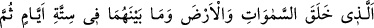

İBRET ALMAK VEYA ŞÜKRETMEK
DİLEYEN KİMSELER İÇİN
59. Gökleri, yeri ve ikisinin arasındakileri altı günde yaratan, sonra Arş’a istivâ
eden (ona hükmeden) Rahmân’dır. Bunu bir bilene sor.
60. Onlara: “Rahmân’a secde edin!” denildiği zaman: “Rahmân da neymiş! Bize
emrettiğin şeye secde eder miyiz hiç!” derler ve bu emir onların nefretini artırır.
61. Gökte burçları var eden, onların içinde bir çerağ (güneş) ve nurlu bir ay
barındıran Allah, yüceler yücesidir.
62. İbret almak veya şükretmek dileyen kimseler için gece ile gündüzü birbiri
ardınca getiren de O’dur.
“Gökleri, yeri ve ikisinin arasındakileri” unsurları ve mevâlîdi, “altı günde” dünya
günlerinden altı gün müddetinde “yaratan,” O’dur. Çünkü ortada güneş ve ay yoktu.
Allah bütün mahlûkâtı göz kırpmaktan daha kısa bir zamanda yaratmaya kâdir iken
böyle yaratması, kullarına işlerinde teennînin sevilen bir şey olduğunu öğretmek içindir.
“sonra Arş’a istivâ eden (ona hükmeden) Rahmân’dır.” Yâni ulvî ve süflî cisimler
ile onlar arasında bulunanları yaratan Rahmân’dır.
“
”nın asıl anlamı, yerleşmek, oturmak bir şeyin kendi zâtında doğru ve mu’tedil
olmak mânâlarına gelir. Bu fill “alâ” harf-i cerri ile müteaddî/geçişli yapıldığı zaman
üstün olmak ve galip gelmek mânâsına gelir. Nitekim el-Müfredât’ta böyle geçmektedir.
Burada kasdedilen de odur.
Allah’ın arşa istivâsının mânâsı, ona mâlik olmasından, güç ve kudretinden kinâyedir.
Maksad O’nun arşa ve diğer mahlûkâtına tasarruf, kudret ve nûfuzunun geçerli olduğunu
beyan etmektir. Arşın özellikle zikredilmesi, yaratılan cisimlerin en büyüğü olmasından
dolayıdır.
Bu âyet sonraki “Onlara: “Rahmân’a secde edin!” denildiği zaman…” âyetine bir
giriş ve hakîkatte mezkur istivâdan maksadın Rahmânlık mertebesini tâyin etmek
olduğunun beyanıdır.